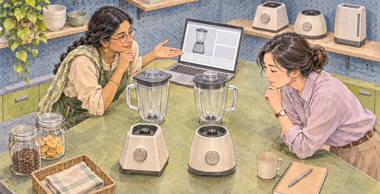

MKT-44 · Hong Kong · 15 minutes · Product fit · Customer Q&A · Contribution after returns
Five stars. Will it fit?

Stars and compatibility answer different questions
An original Journal of Marketing Research study followed a major UK retailer and distinguished customer ratings about quality from questions about product fit. A Hong Kong shop considers how to bring compatibility questions forward without reducing access to genuine critical reviews. The shop and results are fictional.
Your classroom decision
You run a Hong Kong shop’s online listing for a blender jar that fits Series A bases but not the physically similar Series B. The same official compatibility statement, genuine review archive and existing Q&A are available in both layouts. No review or question is hidden, no rating is recalculated and no price changes.
Layout S gives the feature slot to the full star distribution with the Q&A a click away. Layout F puts two recurring compatibility questions in that slot, chosen by question frequency rather than the positivity of the answer. The stars and full reviews stay accessible. The retailer’s publication rule requires checking model-fit claims against its own product table; an owner badge verifies purchase, not technical correctness.
An invented randomized two-arm shopper pilot reaches 100 eligible visitors per layout. Every order buys one jar; all count as shipped before the return window. Margin is HK$180 per kept order; each returned order produces a net loss of HK$60 including handling. There are no differing experiment costs or wider effects in this exercise.
| Measure | Layout S | Layout F |
|---|
| Eligible shoppers | 100 | 100 |
| Shipped orders | 54 | 64 |
| Margin per kept order | HK$180 | HK$180 |
| Loss per returned order | HK$60 | HK$60 |
Your decisionWhich layout would you tentatively favour on the early results? Explain what the star distribution and the compatibility panel each tell buyers, and what outcome you still need to measure.
Round 2 · More information
Nine of S’s 54 shipped orders and twenty of F’s 64 were returned. Of these returns, two in S and twelve in F were verified wrong-series orders. These categories are subsets of returns, not additional orders. All other shipped orders were kept.
The product team finds that a genuine owner’s answer featured in F described an earlier jar, not the current jar. The volunteer had bought that earlier version; their experience was not fabricated. The link inherited the wrong variant label during a page migration. Correct the association in all displays immediately; keep the original material attached to the correct item and preserve critical reviews. Neither team may knowingly leave a misleading claim visible while testing.
Your decisionWhat would you show after correcting the mapping? Compare kept orders and net contribution, then calculate how many F returns would have to become kept orders to beat S at the same shipment count and costs.
Debrief · Purchases are not the end of the funnel
S ships 54 and keeps 45; F ships 64 and keeps 44. Each arm began with 100 eligible shoppers, so F’s ten extra shipments ended with one fewer kept order. S’s net contribution is 45 × HK$180 − 9 × HK$60 = HK$7,560. F’s is 44 × HK$180 − 20 × HK$60 = HK$6,720. S leads by HK$840.
Debrief · Repair the version link, then retest
Switching one return to one kept order adds HK$240 at fixed shipments and margins. Three add HK$720, not enough; four add HK$960 and take F to HK$7,680, HK$120 above S. That is a sensitivity calculation, not a prediction that correcting the link will prevent four returns or preserve shipment count.
Debrief · Make the answer specific without discarding reviews
Use S with a correct, clearly visible compatibility statement now. Retest F only when featured responses carry a checked product-version label, retailer answers are distinguished from owner answers, and buyers can still find all genuine reviews. Measure kept orders, wrong-model returns and contribution per eligible visitor; track the same return window. Do not optimize the star average by screening out negative reviews.
Instructor note
Before discussing returns, ask students which information they seek when deciding whether a product is good and which when checking whether it fits. In the reveal, separate wrong-series returns from all returns and discuss other possible reasons for the F result. The audit proves the mapping defect, not that the defect caused every return.
Round two
Nine of S’s 54 shipped orders and twenty of F’s 64 were returned. Of these returns, two in S and twelve in F were verified wrong-series orders. These categories are subsets of returns, not additional orders. All other shipped orders were kept.
The product team finds that a genuine owner’s answer featured in F described an earlier jar, not the current jar. The volunteer had bought that earlier version; their experience was not fabricated. The link inherited the wrong variant label during a page migration. Correct the association in all displays immediately; keep the original material attached to the correct item and preserve critical reviews. Neither team may knowingly leave a misleading claim visible while testing.
Your decisionWhat would you show after correcting the mapping? Compare kept orders and net contribution, then calculate how many F returns would have to become kept orders to beat S at the same shipment count and costs.